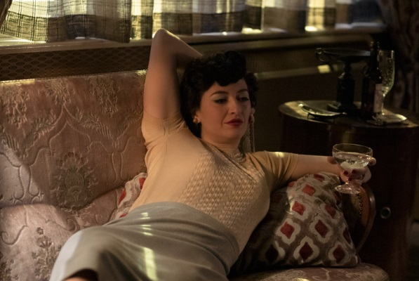

GALERIA DE IMAGENES
Libro de Alice
La madre biológica de Beth era Doctora en Matemáticas.

Alma y Beth
Además de ser la madre adoptiva de Beth, Alma es su mayor confidente.

Beth y Shaibel
Beth aprendió a jugar ajedrez en el sótano del Hogar.

Beth y Beltik
Beltik fue el 1er gran oponente de Beth. Luego se hicieron muy cercanos.

Beth y Towns
Sesión de fotos para la revista de Towns.

Alma
La infaltable copa de martini en manos de Alma.
US. OPEN 1966
Primer gran final contra Benny Watts.

US. OPEN 1967
2do año consecutivo que Watts y Beth se encuentran en esta final.

Solicitud de Beth
Beth convenció al Sr. Shaibel de pagar la inscripción a su 1er torneo.

Beth y Jolene pequeñas
Se conocieron en el Hogar y se hicieron mejores amigas.
.jpg)
Beth y Luchenko
Este enfrentamiento definió al 1er finalista del Campeonato Mundial.

Beth y Watts - Exhibición
Se enfrentaron innumerables veces y siempre aprendieron uno del otro.

Beth y Jolene adultas
Crecieron juntas y a pesar de la distancia siempre se tuvieron presentes.

Beth y Borgov
Saludo final luego de la victoria de Beth.

Comienzo de partida
Beth se caracteriza por tener un fuerte juego con piezas negras.

Altar de Beth
El Sr. Shaibel armó un altar en honor a Beth, con todo su recorrido.

Jugador Misterioso
Con un parecido extraordinario al conserje Shaibel.